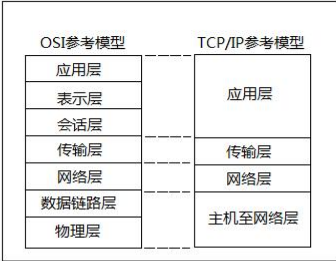
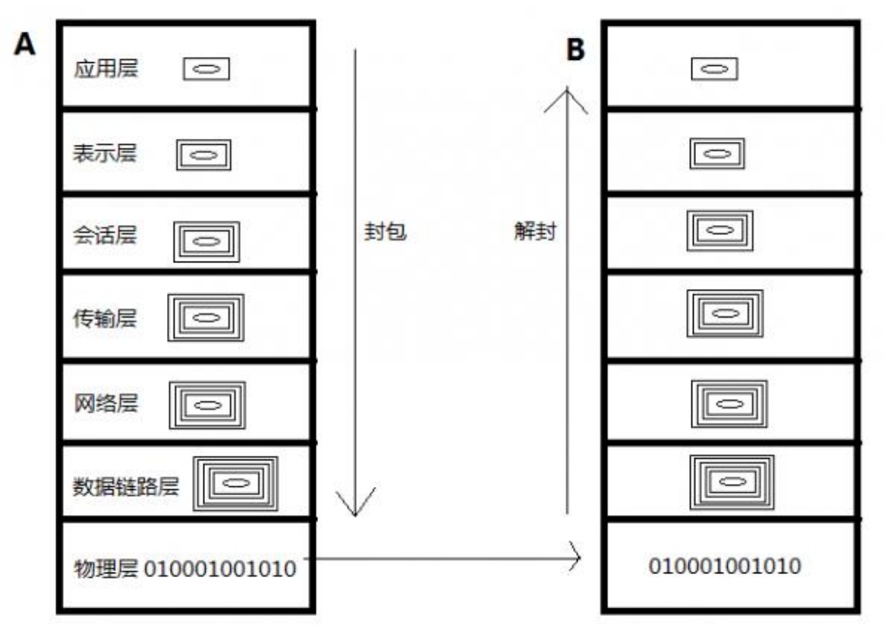
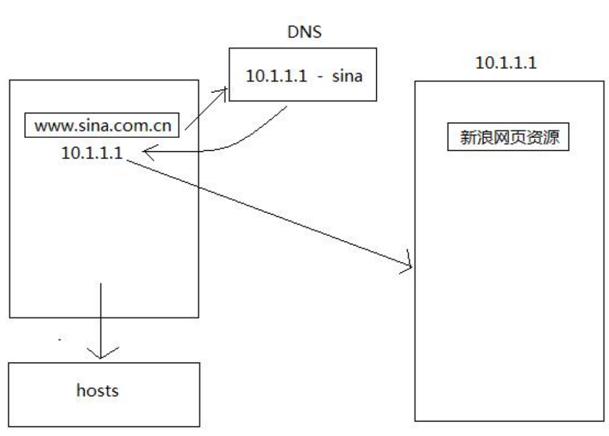
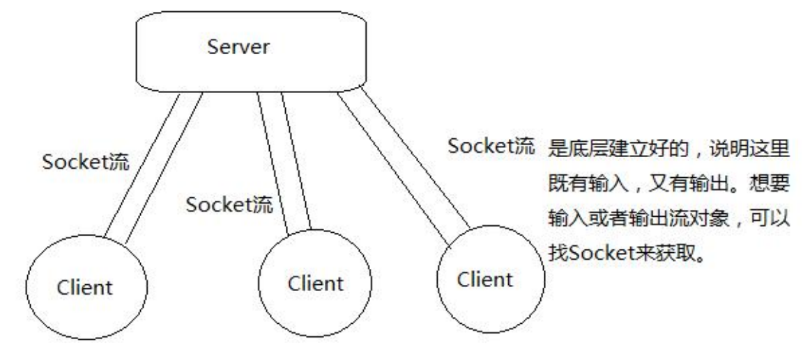

网络参考模型
OSI（Open System Interconnection 开放系统互连）参考模型
TCP/IP 参考模型

七层描述：
- 物理层：主要定义物理设备标准，如网线的接口类型、光纤的接口类型、各种传输介质的传输速率等。它的主要作用是传输比特流（就是由1、0转化为电流强弱来进行传输，到达目的地后再转化为1、0，也就是我们常说的数模转换与模数转换）。这一层的数据叫做比特。
- 数据链路层：主要将从物理层接收的数据进行MAC地址（网卡的地址）的封装与解封装。常把这一层的数据叫做帧。在这一层工作的设备是交换机，数据通过交换机来传输。
- 网络层：主要将下层接收到的数据进行IP地址（例，192.168.0.1）的封装与解封装。在这一层工作的设备是路由器，常把这一层的数据叫做数据包。
- 传输层：定义了一些传输数据的协议和端口号（WWW端口号80等），如：TCP（传输控制协议，传输效率低，可靠性强，用于传输可靠性要求高，数据量大的数据），UDP（用户数据报协议，与TCP特性恰恰相反，用于传输可靠性要求不高，数据量小的数据，如QQ聊天数据就是通过这种方式传输的）。主要是将从下层接收的数据进行分段和传输，到达目的地址后再进行重组。常常把这一层叫做段。
- 会话层：通过传输层（端口号：传输端口与接收端口）建立数据传输的通路。主要在你的系统之间发起会话或者接收会话请求（设备之间需要互相认识可以是IP也可以是MAC或者是主机名）。
- 表示层：主要是进行对接收的数据进行解释，加密与解密、压缩与解压缩等（也就是把计算机能够识别的东西转换成人能够识别的东西（如图片、声音等）。
- 应用层：主要是一些终端的应用，比如说FTP（各种文件下载）、WEB（IE浏览）、QQ之类的（可以把它理解成我们在电脑屏幕上可以看到的东西，就是终端应用）。
P.S.
- 每个网卡的MAC地址都是全球唯一的。
- 路由器实现将数据包发送到指定的地点。
- 应用软件之间通信的过程就是层与层之间封包、解封包的过程。
- OSI参考模型虽然设计精细，但过于麻烦，效率不高，因此才产生了简化版的TCP/IP参考模型。

网络通讯要素
IP地址：InetAddress
网络中设备的标识。不易记忆，可用主机名。
本地回环地址：127.0.0.1 主机名：localhost。
- IPV4数量已经不够分配，所以产生了IPV6
- 在没有连接互联网的情况，为了让访问本机方便，所以分配了一个默认的IP地址，也就是本地回环地址
- 通过ping 127.0.0.1可以测试网络是不是通，如果不通，可能是网卡出问题了
InetAddress类中有一个静态方法：static InetAddress[] getAllByName(String host)，此方法是在给定主机名的情况下，根据系统上配置的名称服务返回其IP地址所组成的数据。这是由于有些主机名对应的IP地址不唯一，如新浪、百度，都是服务器集群。
端口号
用于标识进程（应用程序）的逻辑地址，不同进程的标识。
有效端口：0~65535，其中0~1024系统使用或保留端口。
当一台计算机A向另一台计算机B发送QQ信息时，首先路由器通过数据包中的IP地址定位该信息发送到哪一台机器。然后计算机B接收到数据包后，通过此数据包中的端口号定位到发送给本机的QQ应用程序。
所谓防火墙，其功能就是将发送到某程序端口的数据屏蔽掉以及将从该程序端口发出的数据也屏蔽掉。
传输协议
通讯的规则。
UDP：
- 将数据及源和目的封装成数据包中，不需要建立连接。
- 每个数据报的大小在限制在64k内。
- 因无连接，是不可靠协议。
- 不需要建立连接，速度快。
- QQ、FeiQ聊天、在线视频用的都是UDP传输协议。
TCP
- 建立连接，形成传输数据的通道。
- 在连接中进行大数据量传输。
- 通过三次握手完成连接，是可靠协议。
- 必须建立连接，效率会稍低。
- 案例：FTP，File Transfer Protocol（文件传输协议）。
域名解析

域名解析，最先走是本地的hosts（C:\WINDOWS\system32\drivers\etc\hosts）文件，解析失败了，才去访问DNS服务器解析、获取IP地址。
UDP协议-发送端&接收端
Socket
- Socket就是为网络服务提供的一种机制。
- 通信的两端都有Socket。
- 网络通信其实就是Socket间的通信。
- 数据在两个Socket间通过IO传输。
UDP传输
- DatagramSocket（用来发送和接收数据报包的套接字）与DatagramPacket（数据报包）
- 建立发送端，接收端。
- 建立数据包。
- 调用Socket的发送接收方法。
- 关闭Socket。
- 发送端与接收端是两个独立的运行程序。
由于UDP协议传输数据，只管发送数据，而不管接收端是否能够接收到数据。因此，应该首先启动接收端程序，再启动发送端程序。
聊天程序（双窗口模式）
UDP发送端
public class UDPSendDemo{
public static void main(String[] args) throws Exception{
DatagramSocket ds = new DatagramSocket(8888);
BufferedReader bufr = new BufferedReader(new InputStreamReader(System.in));
String line = null;
while((line = bufr.readLine()) != null){
byte[] buf = line.getBytes();
DatagramPacket dp = new DatagramPacket(buf,buf.length,InetAddress.getByName("192.168.1.100"),10000);
ds.send(dp);
if("886".equals(line))
break;
}
ds.close();
}
}
UDP接收端
public class UDPReceDemo{
public static void main(String[] args) throws Exception {
DatagramSocket ds = new DatagramSocket(10000);
while(true){
byte[] buf = new byte[1024];
DatagramPacket dp = new DatagramPacket(buf,buf.length);
ds.receive(dp);
String ip = dp.getAddress().getHostAddress();
int port = dp.getPort();
String text = new String(dp.getData(),0,dp.getLength());
System.out.println(ip + ":" + port + ":" + text);
}
}
}
聊天程序（单窗口模式-群聊）
UDP发送端
public class Send implements Runnable{
private DatagramSocket ds;
public Send(DatagramSocket ds){
this.ds = ds;
}
public void run(){
try{
BufferedReader bufr = new BufferedReader(new InputStreamReader(System.in));
String line = null;
while((line = bufr.readLine()) != null){
byte[] buf = line.getBytes();
//255是广播地址，这样，所有192.168.1.*这个网段的所有人都会收到信息
DatagramPacket dp = new DatagramPacket(buf,buf.length,InetAddress.getByName("192.168.1.255"),10001);
ds.send(dp);
if("886".equals(line))
break;
}
ds.close();
}catch(Exception e){
e.printStackTrace();
}
}
}
UDP接收端
public class Rece implements Runnable{
private DatagramSocket ds;
public Rece(DatagramSocket ds){
this.ds = ds;
}
public void run(){
try{
while(true){
byte[] buf = new byte[1024];
DatagramPacket dp = new DatagramPacket(buf,buf.length);
ds.receive(dp);
String ip = dp.getAddress().getHostAddress();
int port = dp.getPort();
String text = new String(dp.getData(),0,dp.getLength());
System.out.println(ip + ":" + port + ":" + text);
if(text.equals("886"))
System.out.println(ip + "...退出聊天室");
}
}catch(Exception e){
e.printStackTrace();
}
}
}
启动发送端、接收端线程程序
public class ChatDemo{
public static void main(String[] args) throws IOException {
DatagramSocket send = new DatagramSocket();
DatagramSocket rece = new DatagramSocket(10001);
Send s = new Send(send);
Rece r = new Rece(rece);
new Thread(s).start();
new Thread(r).start();
}
}
TCP协议-客户端&服务端

客户端（Client）首先与服务端（Server）建立连接，形成通道（其实就是IO流），然后，数据就可以在通道之间进行传输，并且单个Server端可以同时与多个Client端建立连接。
- Socket和ServerSocket，建立客户端和服务器端
- 建立连接后，通过Socket中的IO流进行数据的传输
- 关闭socket
- 同样，客户端与服务器端是两个独立的应用程序
TCP客户端
- 客户端需要明确服务器的ip地址以及端口，这样才可以去试着建立连接，如果连接失败，会出现异常。
- 连接成功，说明客户端与服务端建立了通道，那么通过IO流就可以进行数据的传输，而Socket对象已经提供了输入流和输出流对象，通过getInputStream(),getOutputStream()获取即可。
- 与服务端通讯结束后，关闭Socket。
TCP服务端
- 服务端需要明确它要处理的数据是从哪个端口进入的。
- 当有客户端访问时，要明确是哪个客户端，可通过accept()获取已连接的客户端对象，并通过该对象与客户端通过IO流进行数据传输。
- 当该客户端访问结束，关闭该客户端。
TCP协议传输数据必须先开服务端，再开客户端。否则，客户端根本连接不上服务端。
服务端和客户端交互
TCP客户端
public class ClientDemo{
public static void main(String[] args) throws UnknownHostException,IOException {
Socket socket = new Socket("192.168.1.100",10002);
OutputStream out = socket.getOutputStream();
out.write("tcp演示：哥们又来了！".getBytes());
//读取客户端返回的数据，使用Socket读取流。
InputStream in = socket.getInputStream();
byte[] buf = new byte[1024];
int len = in.read(buf);
String text = new String(buf,0,len);
System.out.println(text);
socket.close();
}
}
TCP服务端
public class ServerDemo{
public static void main(String[] args) throws IOException {
ServerSocket ss = new ServerSocket(10002);
Socket s = ss.accept();
String ip = s.getInetAddress().getHostAddress();
InputStream in = s.getInputStream();
byte[] buf = new byte[1024];
int len = in.read(buf);
String text = new String(buf,0,len);
System.out.println(ip + ":" + text);
//使用客户端socket对象的输出流给客户端返回数据
OutputStream out = s.getOutputStream();
out.write("收到".getBytes());
s.close();
ss.close();
}
}
文本转换TCP客户端和服务端
TCP客户端
public class TransClient{
public static void main(String[] args) throws UnknownHostException,IOException {
//1. 创建socket客户端对象。
Socket s = new Socket("192.168.1.100",10004);
//2. 获取键盘录入
BufferedReader bufr = new BufferedReader(new InputStreamReader(System.in));
//3. socket输出流
PrintWriter out = new PrintWriter(s.getOutputStream(),true);
//4. socket输入流，读取服务端返回的大写数据。
BufferedReader bufIn = new BufferedReader(new InputStreamReader(s.getInputStream()));
String line = null;
while((line = bufr.readLine()) != null){
if("over".equals(line))
break;
out.println(line);
//读取服务端发回的一行大写数据。
String upperStr = bufIn.readLine();
System.out.println(upperStr);
}
s.close();
}
}
TCP服务端
public class TransServer{
public static void main(String[] args) throws IOException {
//1. 创建ServerSocket。
ServerSocket ss = new ServerSocket(10004);
//2. 获取socket对象。
Socket s = ss.accept();
//获取ip。
String ip = s.getInetAddress().getHostAddress();
System.out.println(ip + "......connected");
//3. 获取socket读取流，并装饰。
BufferedReader bufIn = new BufferedReader(new InputStreamReader(s.getInputStream()));
//4. 获取socket的输出流，并装饰。
PrintWriter out = new PrintWriter(s.getOutputStream(),true);
String line = null;
while((line = bufIn.readLine()) != null){
System.out.println(line);
out.println(line.toUpperCase());
}
s.close();
ss.close();
}
}
上面案例中之所以客户端结束后，服务端也随之结束的原因在于：客户端的socket关闭后，服务端获取的客户端socket读取流也关闭了，因此读取不到数据，line = bufIn.readLine()为null，循环结束，ServerSocket的close方法也就执行关闭了。
上面案例中的客户端和服务端的PrintWriter对象out获取到数据后，一定要刷新，否则对方（服务端或客户端）就获取不到数据，程序便无法正常执行。刷新操作可以通过PrintWriter类的println()方法实现，也可以通过PrintWriter类的flush()方法实现。但是，由于获取数据的方法是BufferedReader对象bufIn的readLine()方法（阻塞式方法），此方法只有遇到“\r\n”标记时，才认为数据读取完毕，赋值给String对象line。所以，使用PrintWriter类的flush()方法刷新数据时一定要记得追加“\r\n”！
TCP协议上传文本文件
TCP服务端
public class UploadServer{
public static void main(String[] args) throws IOException {
ServerSocket ss = new ServerSocket(10005);
Socket s = ss.accept();
System.out.println(s.getInetAddress().getHostAddress() + "......connected");
BufferedReader bufIn = new BufferedReader(new InputStreamReader(s.getInputStream()));
BufferedWriter bufw = new BufferedWriter(new FileWriter("d:\\demo\\server.txt"));
String line = null;
while((line = bufIn.readLine()) != null){
bufw.write(line);
bufw.newLine();
}
PrintWriter out = new PrintWriter(s.getOutputStream(),true);
out.println("上传成功");
bufw.close();
s.close();
ss.close();
}
}
TCP客户端
public class UploadClient{
public static void main(String[] args) throws UnknownHostException,IOException {
Socket s = new Socket("192.168.1.100",10005);
BufferedReader bufr = new BufferedReader(new FileReader("d:\\demo\\client.txt"));
PrintWriter out = new PrintWriter(s.getOutputStream(),true);
String line = null;
while((line = bufr.readLine()) != null){
out.println(line);
}
//告诉服务端，客户端写完了。
s.shutdownOutput();
BufferedReader bufIn = new BufferedReader(new InputStreamReader(s.getInputStream()));
String str = bufIn.readLine();
System.out.println(str);
bufr.close();
s.close();
}
}
了解客户端和服务器端原理
最常见的客户端：浏览器，IE/chrome。
最常见的服务端：服务器，Tomcat。
URL&URLConnection
URI：统一资源标示符。
URL：统一资源定位符，也就是说根据URL能够定位到网络上的某个资源，它是指向互联网“资源”的指针。
每个URL都是URI，但不一定每个URI都是URL。这是因为URI还包括一个子类，即统一资源名称（URN），它命名资源但不指定如何定位资源。
常见网络结构
C/S client/server
特点：
- 该结构的软件，客户端和服务端都需要编写。
- 开发成本较高，维护较为麻烦。
好处：
- 客户端在本地可以分担一部分任务。例如，杀毒软件直接对本机文件进行杀毒。
B/S browser/server
特点：
- 该结构的软件，只开发服务器端，不开发客户端，因为客户端直接由浏览器取代。
- 开发成本相对低，维护更为简单。
缺点：
- 所有运算都要在服务端完成。